Because I'm going on vacation on October 15th I only have 2 weeks to complete this month (gulp). And I also have to cram a completely new 40 minute presentation in my head for the Fronteers conference that I'm speaking at on October 6th (great fun, but also time consuming). But that's not going to stop me from trying to have a lot of fun with this month's visual!
We originally wanted to do something with the US elections, but with the way that turned out... So Shirley said she instead would love to look into Obama. However, as a non-American that topic didn't really interest me. However, perhaps how the Americans see/feel about the presidential family is how Europeans might feel about the royal families in Europe. So that's how we ended up with our current theme
The first thing that came to mind when I thought about the royals, was their bloodlines. Due to all of that intermarriage I was sure most royals in Europe would be relatives of each other. The question was then, how close of a relative? As always I was pretty sure there would be loads of nice datasets to find about the royal bloodlines. But, as in the previous months, that turned out differently. Sure, many people had drawn some images of the closest relatives of some royals in Europe. But I really didn't want to do too much manual data gathering this month.
Luckily there was 1 file that I found that seems to be the information source in terms of royal genealogy. However, it was made in 1992 so it is missing the recent additions to the royal families. Also, when I was looking for "interesting" royals to highlight, such as the last king of Italy, or Franz Ferdinand (who's assassination sparked WWI) I found that often these lines stopped a few generations before. I therefore manually added about ±150 people to the file (which was a bit of a challenge because the file is in a strange format; a gedcom file) that took at least 5 hours over the two weeks...
I did the data preparation in R as usual. Family trees are something for a network layout, so the odd format (see the screenshot below, it contained lines on individuals & families) had to be transformed into a nodes & links file that d3's force layout knows how to handle. Not too difficult, but it still required quite some lines of code to eventually be able to run through the whole file and get the info out and into some data sets.
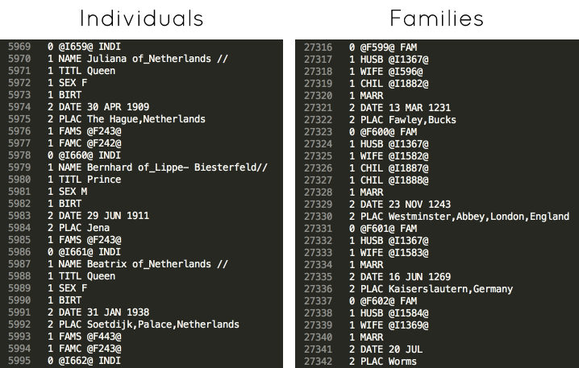And that was all I did beforehand, just getting the node & link files in good shape. But while wrangling my way through d3's force layout I thought about new things to add or values to pre-calculate to get more insights from the structure of the network.
For example, I wanted to do something with the birth year of a person, but this wasn't know for everybody. I therefore wrote a small script that tries to find a good guess; either by looking if the death date is know (and then subtracting about 60 years), or looking at the birth or death date of the spouse, children or parents, in that order (again subtracting or adding some years to account for generational differences). Not perfect, but I didn't need perfect dates for the idea that I had in mind.
My final addition to the data was to calculate who was the royal each person was most closely related to (and within how many steps). I wanted to have this pre-calculated so that I had access to this beforehand in the visualization. Saves a lot of calculation time :)
You can read a more elaborate account of the preparation on the GitHub page of the dataset
I truly didn't know what kind of network the data was going to give me, so this month I actually didn't really sketch on paper, but sketched with code in some way I guess. Getting to know d3v4's new force functions and trying out different settings for practically all variables.
Below you can see a selection of screenshots that outlines my journey through getting to know the network. I've added the time when I took the screenshot to give you an idea of how long it took to go from one step to the other.
My first result was a major network that blew up far beyond my humble 1000 x 1000px SVG. Increasing the gravity made a useless hairball. I eventually found some settings that seemed to reveal a bit of structure, but I needed to increase the SVGs size to 6000 x 6000px, I couldn't get it too fit into a smaller size... By now I saw that I really needed some more context to find insights. Therefore, I decided to add birth year to my data, since it is the best underlying variable that brings sense to the connections in this network, and then color the nodes by that (dark blue = long ago - yellow = recent).
Because birth year wasn't known for about 40% of the people in the network I first tried a lot of different things to somehow turn off the gravity for these nodes, so that they would be held in place through the links they had to other nodes for which the birth year was known. Like little springs. I asked around for help, looked into d3v4's underlying code of the force functions, but eventually there was no way around it. So I instead decided to estimate the birth year. Finally, there was some form of network that was getting slightly insightful.
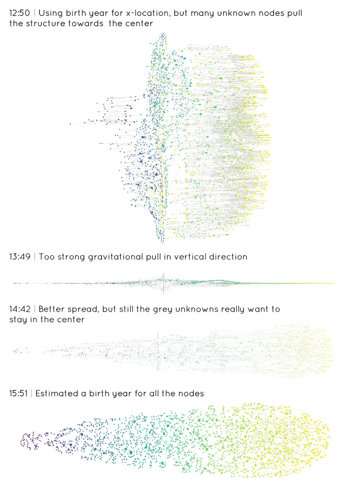But I still felt like it wasn't really getting anywhere. I continued again on another day and I was so depressed with the network and its potential that I didn't even take screenshots of my attempts for quite some time. I was thinking of just giving up on this network and try to use the data in a different way (or use some other data, how much the royals are getting from the taxpayers money is always a hot topic for example).
But I wanted to try one final thing to see if it turned out better, looking more at the design itself; the colors and such. The 12 current royal hereditary leaders were most important so I made them big and noticeable. I also spread them out evenly along the vertical axis in an attempt to pull apart the network a bit more, taking into account which were closely connected (placing these together) and the most loosely connected royal leaders on the outside.
The connected nodes reminded me of constellations of stars in the sky, so I switched to a dark theme where the nodes were colored yellow and added a touch of glow. And with the initial idea of connections between current royal leaders I calculated the distance from each node to a royal and then adjusted their opacities to depend on their closest distance to a royal. So the people closest to a royal would be very visible and this would diminish to almost completely transparent for those more than 6 steps away from all of the 12 royal leaders.
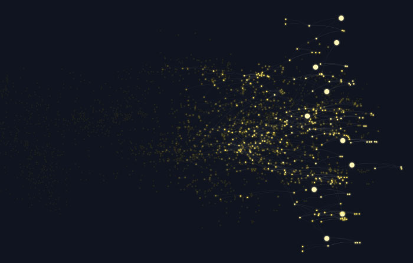And that's when I finally started to see some potential. I decided that I had to focus on that connection to a current royal leader more and see where that would take me. The visual still needed about 2500px in width to have a nice spread of the nodes, but horizontal scrolling is not preferred, so I turned it 90 degrees so it would be a vertical scroll. To pull apart the network even more I calculated the (average) royal to which each node was closest. I used that info to generate a slight horizontal pull of the nodes to their closest royal descendants. As you can see in the image below right this genealogy is mostly focused on the English bloodline :)
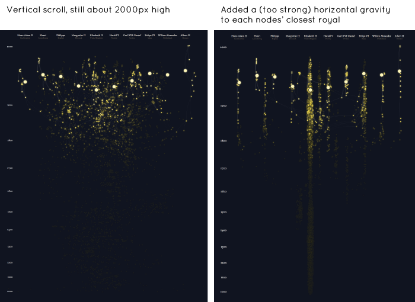I wasn't really interested in the people born more than ±300 years ago, because it was already apparent that the current royals are most highly connected in the last 200 years, so I decided to remove everybody with an (estimated) birth date from before 1000. I also squished the vertical date scale even more towards older times to make the total visual less high and more focused on the last 2 centuries.
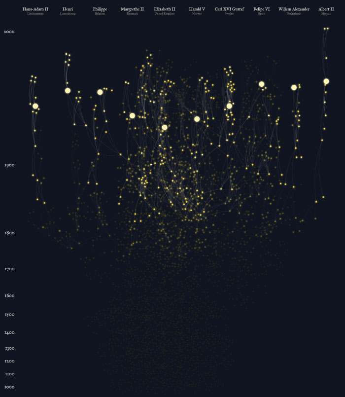And that's when I finally ended up with a network structure that I was happy with. That even in a static state already showed some insight into how connected the current royal leaders are. Now I could finally move on from my digital sketching and think about the details & interactivity to make the closest connection between people more apparent.
There's definitely a very vague line between this month's sketching and coding, since the sketching already took quite a bit of coding. But after getting the layout in the right position I focused on getting the interactions in there. There were two main things I wanted to achieve; showing how far "6-degrees of separation" (i.e. 6 generations back & 6 generations forward) would spread from a hovered over person into the network: "To which other current royal leaders is the King of Spain connected within 6 steps?" for example. The second thing was showing the shortest path. When I had a basic hover working I saw that some people had very big networks within 6 steps, so it was difficult to really see how two people were connected. I therefore wanted to be able to click on a person and then click on some other person in the network to see the shortest path between those people.
I usually start out very simple, so to look for 6 steps beyond a person I just wrote a while loop that ran 6 times and looked at the people connected to the selected persons from the previous loop. Not very smart or performing. But it's easy, fast to set up and then I could determine if the result on the visual was as I'd hoped. Only after I saw that the hover of 6 steps had potential did I look into using key-value maps to quickly request all the people connected to one person, which made the calculation almost instant.
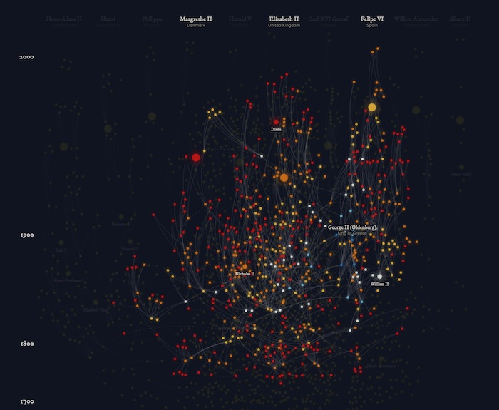I'm sure some people think my choice of color for the hovers is a non optimal one, going from a blue to white to red; not very intuitive. But this was a very deliberate choice. Since I was seeing the network as stars & constellations I thought it would be a nice analogy to color the "stars" to the colors that actual stars shine in. The very hottest, biggest stars are blue, going to white, yellow, orange and then red stars which are the coolest (& smallest) stars. Due to my Astronomy background this color scheme is straightforward to me (and I build these projects as experiments for myself foremost 😄 ).
Due to more of a mistake I ended up with a version in which you see the steps grow, from 1 step away from a person to 2, 3 and so on. And this was giving a much better intuitive feel about what these colors represented that I actually put it into the final version. I'm still stumped that I didn't think of doing that from the start 😳
Because the nodes are a bit small I found that hovering over a node exactly was a bit of a chore. So I used the voronoi technique (I wrote a blog about this a year ago) in which I attach bigger, but clipped, circles underneath the nodes that capture the mouseover event. In the image below I've made them visible when I was investigating an error (the straight vertical line in there was wrong).
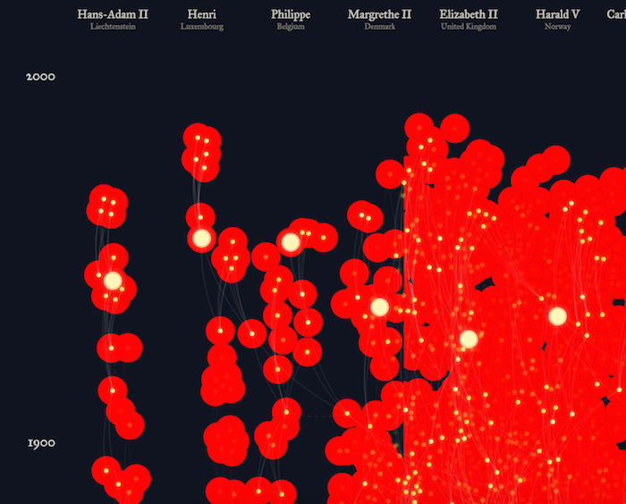At first I was afraid that with almost 3000 nodes in the network that a shortest path calculation would take too much time. I nevertheless wanted to first actually make it work and only then see if it was something that might survive until the final version. I knew about Dijkstra's algorithm, but no need to invent the wheel again, so I found a script on Github that I adjusted to my needs. Surprisingly enough it performed amazingly well, it returned a path before I could blink. Personally, I very much like the small dotted rings that rotate around the two selected people 😃
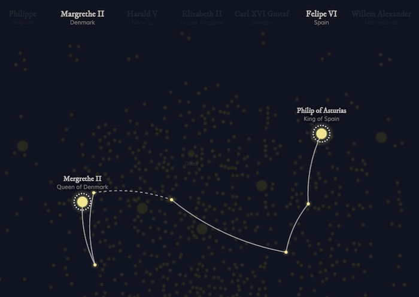What caused me most headaches this month was performance in general. How to make sure that something like a mouseover would only trigger when somebody was hovering over a node instead of just moving their mouse over the grid of nodes. How to only run a mouseout when the 6-degrees-animation had kicked in and not on every switch from node to node (and thus performing a transitions from an already yellow end state to the same end state). And even more of these things, all to make sure the browser only did things when a visual change was needed (and then only on the "affected" parts of the visual). This did cause the end result to work very smooth on my 0.5 year old Macbook in Chrome, but strangely enough it is taking significantly longer to do the visual updates in both Firefox and Safari (if somebody can explain why please let me know!). Of course it's also slower on my personal 6 year old Macbook, but not too bad.
The animated gif below shows the interactions available; hover, click and 2nd click (It's a bit slow because I have to capture gifs on my 6 year old Mac and my browser slows down during a capture).
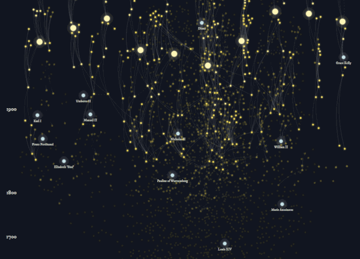Which brings me to the final section. Like August I again did this month in half the alloted time. This time because I'm going on vacation for 3 weeks (yay!). But... if I had had 2 more weeks: I would try to create a version in canvas (and figure out how to do the interactions in there) that would hopefully be more performing. I would want to create a search function where you can find any royal in the data (although the names aren't always in there spelled perfectly, but it would be a start). And finally I would want to look into making the network even more squished so that you would be able to see more of the total height at once.
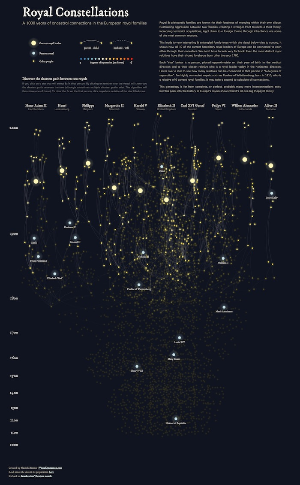But I'm happy with what I managed in 2 weeks (while also having other obligations in my free time). It may not be as smooth in terms of interactions as I had hoped, it does do exactly what I wanted: showing how interconnected the European royal families really are, who the "linking pins" are in this network and what the shortest path is between two persons. And I learned a heck of a lot more about d3v4's force options. You can find the final result here.
Originally Nadieh and I had October slotted for the elections, so that we could potentially have something ready by voting day. But as October approached, I realized more and more that I wanted absolutely nothing to do with the election other than to...vote not-Trump. So as October approached and we were musing what to do instead, I realized: a future president getting voted in also means a current president leaving the White House.
And we may not all agree on what the Obama administration has or hasn't done politically, but I think most of us can agree: the Obamas are one damn cool couple. Like, the slightly dorky parents that I wouldn't mind associating with if they were my friends' parents. Like that time last year when Mr. President recorded a video of himself talking to a mirror so that he could plug his new healthcare.gov. Or when recently Madame First Lady Carpool Karaoke'd with James Corden and she was so hilariously relatable. And then I realized that weirdly perhaps I was going to miss them being our POTUS and FLOTUS.
So I wanted to do something silly and light-hearted to thank them for their eight years in office. And the first thing I could think of was all of their appearance on late-night talk shows I watched on Youtube (that slow jam the news so good). I started digging around to see if there was a list of talk show appearances for both Barack and Michelle - and it was IMDb to the rescue again! Both of them had their own IMDb pages, and after going through Barack Obama's 214 credits as self and Michelle's 123 while cross-referencing the Wikipedia article on the list of late-night American network TV programs I was able to get this list:
 (Full list of appearances)
(Full list of appearances)
Using that information, I was able to use the Youtube Search API to search for keyword "obama", filtered down by channelId and published within 5 days of the interview date (code). Unfortunately, because I wasn't sure how many videos were published for each interview (if at all), I set the maxResults to 15. This meant that I would get back videos within those days that had nothing to do with the Obamas, and I had to manually go through all of the videos to weed out the irrelevant ones (there were 244 videos and 186 were ultimately filtered out).
Here is the final list (it loads quite slowly because of all the embedded videos, for which I apologize):
 (Full list of videos)
(Full list of videos)
The list is unfortunately incomplete, since there were interviews with past shows/hosts like the Late Show with David Letterman and the Tonight Show with Jay Leno that weren't on Youtube. I chose to keep them out instead of trying to find the videos on other websites or on unofficial channels, in the hopes that this would make for cleaner data.
D3.unconf was on the 16th and 17th of this month, and the second day was dedicated to hacking - a perfect opportunity to work on datasketches. But I was feeling a little lost on what to do with the data and mentioned this to both Ian and Erik.
Which, in retrospect, was probably a big mistake. Because Ian was like, "you should get the captions for each video and do something with the words!" and Erik was like, "wouldn't it be cool if you could run facial detection on the video and correlate their emotions with what they're saying?". And I was like, "GUYS you know I only have a month to do this?!"
But Alas, like a poor version of Inception, the idea was planted and it took root.
I couldn't find an affordable way to pass whole videos into any facial recognition software, but thankfully I was at the very resourceful D3.unconf. Within a few minutes an alternative was suggested: take screenshots of the video and pass the images into Google's Vision API (provided by Google Cloud, who just happened to be one of the sponsors for the unconference). Here's what I did:
 And much more, like what it thinks the picture is of, and what famous locations it might contain. (code: annotateImages.js)
And much more, like what it thinks the picture is of, and what famous locations it might contain. (code: annotateImages.js)
This whole process took a few days, and once I finally had all the data cleaned I got started on the sketching. I learned my lesson from the last month, and made sure to explore the basic shape of the data, as well as all the different types of data I had on hand:

Once I had all that figured out, I started thinking about what I wanted to convey. I knew it was ambitious, but I wanted to make full use of such a rich dataset, and also get across why even though there were 44 appearances (after I did this, the number increased to 46) I only had screenshots for 29 videos. I've also been wanting to try my hand at a scrollytelling for a while to test my technical skills, so I mapped out my first few sections:

After the previous sketch, I actually took a few days to build out those first few sections first. This also helped me get a better feel of the video data, which I hadn't explored in as much detail as the hosts and appearances data. I had originally envisioned something where all the videos would be lined up in rows, and a timeline would show a bar graph of word frequence based on the captions, and all the times that the POTUS and FLOTUS laughed. But I soon realized that that was WAY too much data to try and show on one screen. So I came up with the following sequence to introduce the videos and to only show the selected video's timeline of captions and laughs:

I was originally even more ambitious and had planned on showing details for each caption, not just the screenshot at the time of the caption with the emojis on the faces. I had planned on showing for each word in the caption the emojis and hosts most frequently associated with that word in a timeline of its own. I'm so glad I didn't do that, because it would have just been overkill. (Sometimes, even if we have the data, we don't gotta.)
So as soon as I figured out that the Google Vision API gave me the bounds of faces and heads, I knew I had to put emojis on the faces: 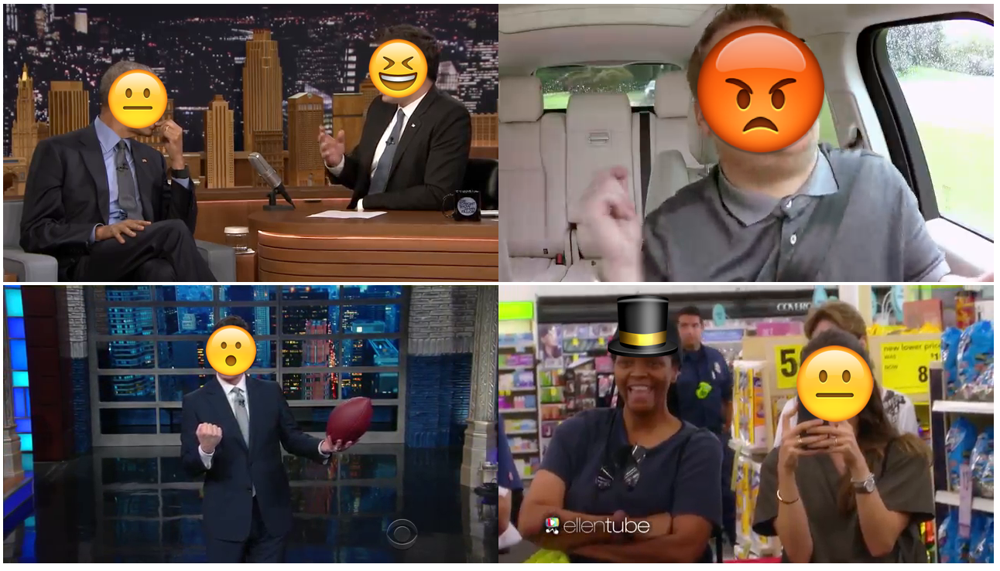 And boy, do I not regret; it brought me so much joy. The rest of the visualization is basically just a build up to the end tool to explore all the photos with emojis on their faces. 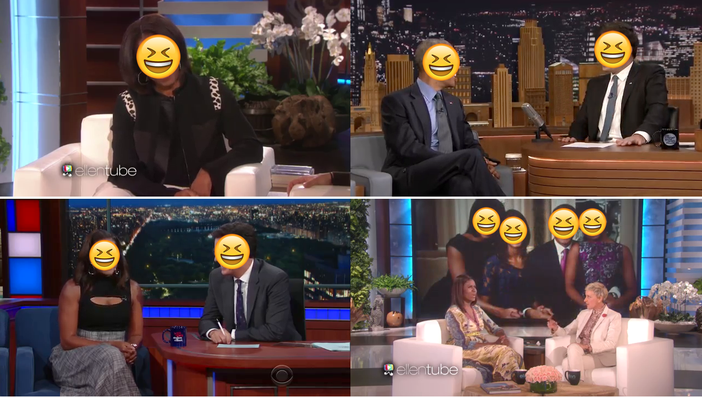
But before I get into the details of the implementation, let me just say: I am NEVER getting this ambitious for a one-month *side* project ever again. This month's implementation brought me through quite a few first-time technical challenges:
The first thing I wanted to do was to implement animation tied to scrolling like Tony's A Visual Introduction to Machine Learning - it always seemed like a fun technical challenge. The key is to interpolate between two sections, and I worked out the logic to be:
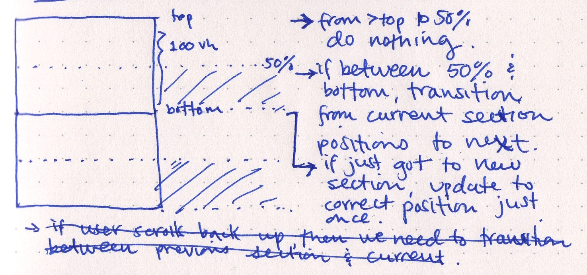
So when the user got to be halfway down the section (I actually ended up using 25% instead), I would calculate the elements' positions for the current section and for the next section and interpolate between them. From there until the user entered the top of the next section, I would pass the amount scrolled into the interpolation to get the x/y positions (and even, for the videos, the radius). Here is the code, which took quite a bit of fiddling.
 (It's much smoother on the website - I ran the Chrome Dev Tools Profiler religiously to weed out any unperformant code!) One of my favorite parts is when I scroll to the first timeline, and the links animate between the host and the Obamas to connect them.
(It's much smoother on the website - I ran the Chrome Dev Tools Profiler religiously to weed out any unperformant code!) One of my favorite parts is when I scroll to the first timeline, and the links animate between the host and the Obamas to connect them.
Another interaction that made me really happy was hovering the hosts to see the corresponding guest appearances. A very simple implementation, but helped so much in making the tangle of links easier to navigate: 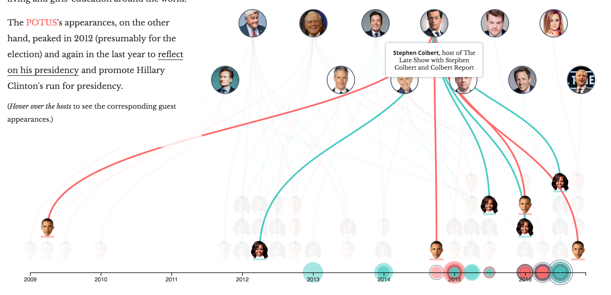 Another favorite; This one's showing all the videos with captions, and the filled circle radius is the number of views, and the other ring radius is the duration of the video. It's fun to see that some of the videos got a lot of views despite being shorter in duration, or vice versa. The small dots on the ring is every time Google Vision API said there were expressions of joy, so you can see whether the laughter was even throughout the video, or were concentrated in specific blocks. My favorite part about this though, is actually in the description, where I calculate the number of times there were laughs for the POTUS and FLOTUS and finding out that the FLOTUS has significantly more laughter: 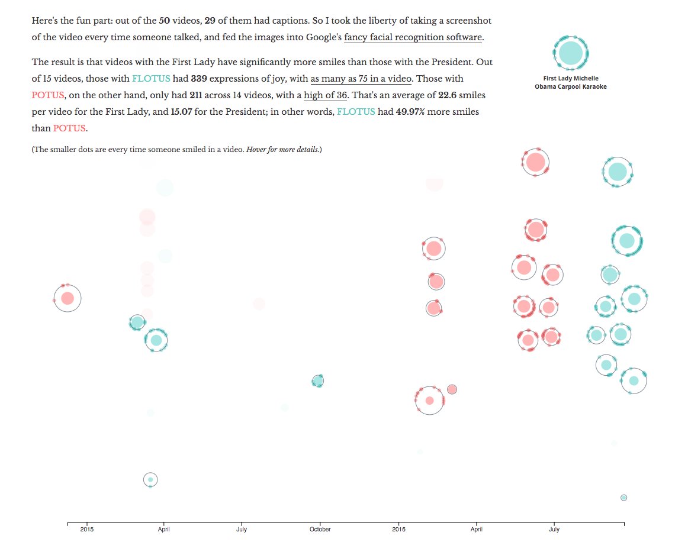
And here is the timeline with the emojis on their faces: 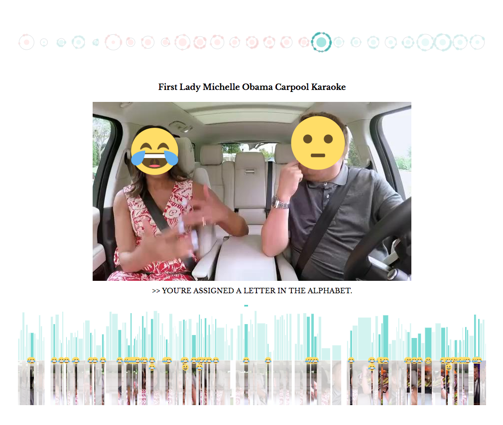 And as soon as I saw that timeline, I knew I needed to have a fisheye effect. I had seen the New York Times implementation of the horizontal fisheye to navigate through fashion week images, and Nadieh had adjusted that code a few months ago when we were considering using the effect for the front page of datasketches. But the code was for canvas, and I was already committed with SVG; it took a bit of digging to find an SVG equivalent for cropping images (preserveAspectRatio and the key is to set the viewBox width the same as the image width). It took a few more passes of Nadieh's code and the original fisheye code to realize that all I needed was the little bit of code that mapped an x-coordinate to its new position based on the distortion. From there, it was just passing in the hovered x-position and re-rendering. 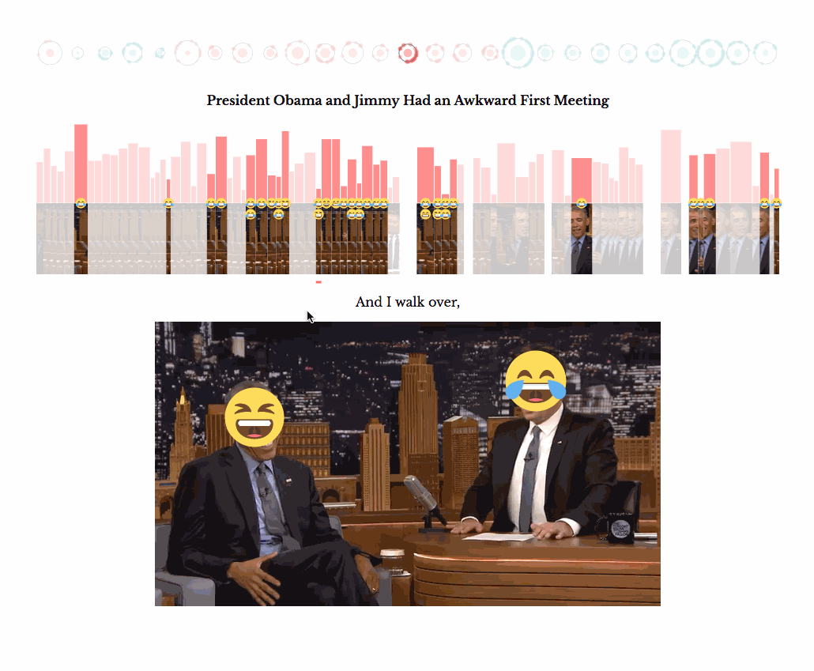 What I'm happiest about with this fisheye though, is that I made it work on mobile! When I used touchmove by myself, scrubbing was extremely buggy and finicky on mobile. After thinking the whole day of a different interaction I could have with the timeline on mobile, I realized that d3 already had a great touch implementation with d3.drag(); the interaction on mobile using d3 drag for the fisheye was so smooth it was magical butter 😍
And finally, here is the (intro of the) finished piece: 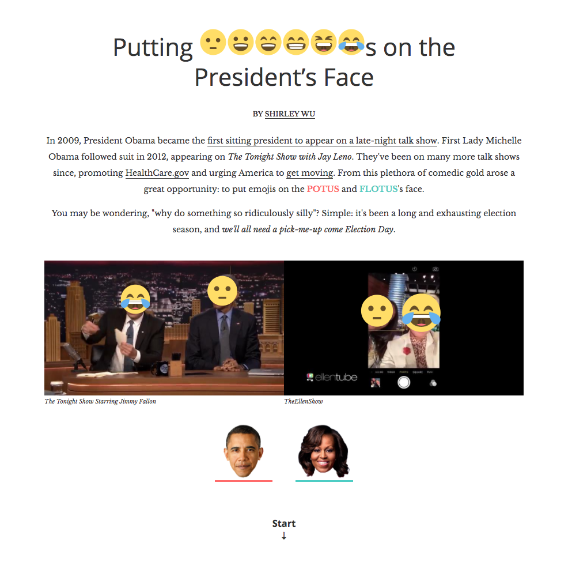 This month was definitely killer, but I am also super happy I stuck it through. I'm really proud of all that I was able to figure out, and that I now have a completed scrollytelling under my belt. The most suprising though, is my newly acquired sense of fearlessness, where I really feel that if there's something I want to implement, I'll be able to figure out how to do it given enough time and the right Google searches.
{kind=link}
{kind=link}
{kind=link}
{kind=link}
{kind=link}
{kind=link}
{kind=link}
{kind=link}
{kind=link}
{kind=link}
{kind=link}
{kind=link}
{kind=link}
{kind=link}
{kind=link}
{kind=link}
{kind=link}